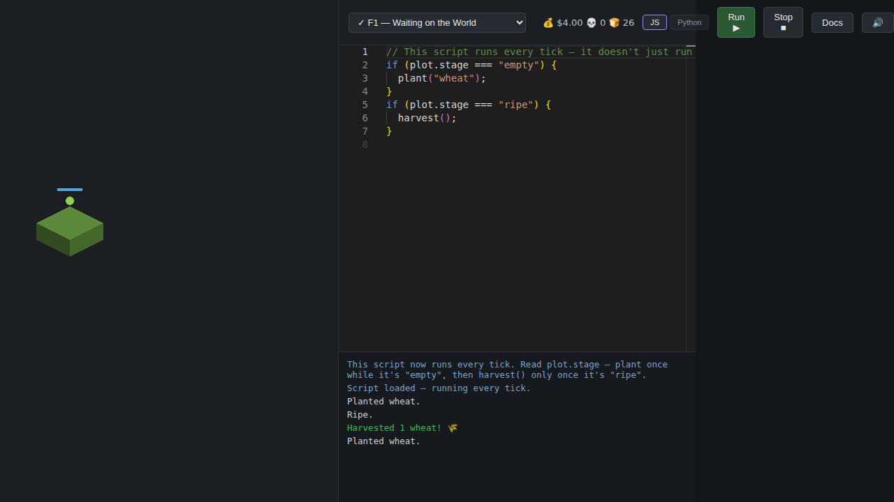

AutoCode
Write real JavaScript or Python and watch it run — plant and harvest crops, pilot a mining ship, run a shop, and automate a factory. Every script runs live in your browser, no install, no account.
All of it, in one place
Farm, Space, Store, and Factory share one save — credits earned selling ore in the Store buy ship upgrades in Space, and every crew eats what the Farm grows. The full game puts all four behind one set of tabs, so the whole loop runs without leaving the page.
Play each world on its own

Farm
The starting world. Plant, water, and harvest crops with a script that runs once — or every tick, once it's watching the world change.
Space
Automate a mining ship: navigate an asteroid field, mine ore, and manage cargo and fuel under your own logic.
Store
Run a shop with a script: price goods, restock shelves, and react to a market that moves on its own.
Factory
Chain machines into a production line and keep it running — the most involved automation puzzle of the four worlds.
Source on GitHub